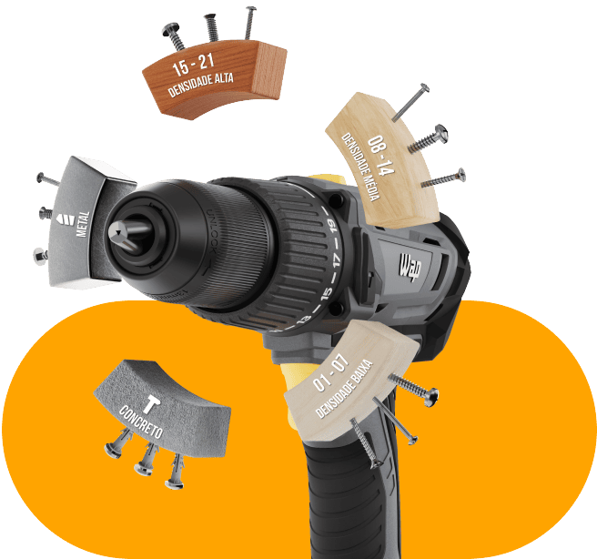
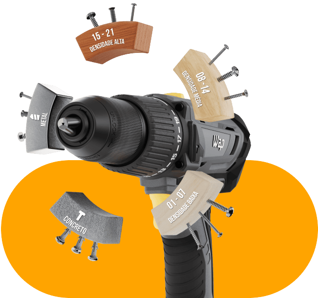

Parafusadeira e Furadeira de Impacto
1/2" WAP K21 ID03
Desempenho superior com máxima precisão!
Na hora de equipar seu kit de ferramentas, não pode faltar uma excelente parafusadeira e furadeira para garantir dupla função com alto desempenho. A melhor escolha para realizar furos precisos, com rapidez e sem esforço é ela: a Parafusadeira e Furadeira de Impacto ½” K21 ID03.

Robusta e
compacta
Seu manuseio é confortável e versátil em trabalhos de manutenção rápidos ou reparo prolongados.

Torque máximo
de 60 Nm
Enfrente desafios com robustez e potência em todas as tarefas do dia a dia.

Mandril de
aperto rápido
Garante estabilidade nas perfurações e facilita a troca de brocas e acessórios de 1/2” (13 mm).
Mais eficiência e precisão
nos trabalhos manuais


Dupla função poderosa
Compacta e robusta, a Parafusadeira e Furadeira WAP encara qualquer desafio com potência máxima. Seu torque de 60 Nm permite perfurações precisas de 20 mm em madeira, 6 mm em aço e 13 mm em superfícies de concreto.
O seletor reverso transforma a tarefa de apertar e soltar parafusos em uma experiência ágil. Propondo dinâmicas simples para os pequenos consertos e reformas diárias, possui dois níveis de velocidade.


Carga duradoura para você explorar todo potencial da sua ferramenta
100% compatível com toda linha 21V, as ferramentas K21 da WAP acompanham uma bateria 2.0Ah intercambiável, que proporciona flexibilidade e praticidade para suas tarefas ao utilizar os equipamentos do kit.
O indicador de bateria das ferramentas garante a segurança do usuário ao explorar todo potencial dos equipamentos. Assim, você sempre terá carga suficiente para finalizar qualquer projeto com a qualidade e a performance WAP.


Alterne o sentido da rotação no sentido horário para apertar ou anti-horário para soltar parafusos.
Utilize a ferramenta de acordo com suas necessidades: parafusar, perfurar e fazer perfuração com impacto.


Com dois níveis, essa função oferece flexibilidade, controle e eficiência para uma variedade de tarefas de parafusamento e perfuração.

Equipada com seletor de torque de 21 níveis, proporciona mais versatilidade e precisão para casa tipo de trabalho.

Economize tempo
e
esforço com segurança
Equipada com 21 níveis de torque, a ferramenta mais popular nas caixas de ferramentas oferece conforto e controle durante o uso com sua empunhadura ergonômica. Além disso, a luz de LED integrada ilumina espaços mal iluminados para que o trabalho seja preciso e seguro.
O ato de trocar brocas durante as sessões de fixações e perfurações pode parecer desafiador, mas com o mandril metálico de aperto rápido da Parafusadeira e Furadeira de Impacto ½” K21 ID03, essa mudança fica fácil.

Determine a potência ideal para cada tipo de perfuração com o controle de intensidade, acionado através da pressão do gatilho.
A luz de led integrada permite que você trabalhe em espaços com pouca iluminação, garantindo precisão e segurança.
Acompanhe o nível de energia da parafusadeira e furadeira WAP com o indicador de bateria e tenha confiança do início ao fim das tarefas.
O mandril de aperto fácil torna a troca brocas durante o uso uma atividade rápida e coloca à sua disposição muitos tipos de perfuração.
Sua empunhadura emborrachada ergonômica oferece mais conforto e controle durante o uso.
Movimente-se com tranquilidade entre os ambientes sem deixar a ferramenta, utilizando o clip para cinto.
Compatível com toda Linha 21V WAP, a bateria de Li-Íon 2.0Ah, além de intercambiável, oferece flexibilidade e praticidade.
-
 A luz de led integrada permite que você trabalhe em espaços com pouca iluminação, garantindo precisão e segurança.
A luz de led integrada permite que você trabalhe em espaços com pouca iluminação, garantindo precisão e segurança. -
 Sua empunhadura emborrachada ergonômica oferece mais conforto e controle durante o uso.
Sua empunhadura emborrachada ergonômica oferece mais conforto e controle durante o uso. -
 Movimente-se com tranquilidade entre os ambientes sem deixar a ferramenta, utilizando o clip para cinto do equipamento.
Movimente-se com tranquilidade entre os ambientes sem deixar a ferramenta, utilizando o clip para cinto do equipamento. -
 Acompanhe o nível de energia da parafusadeira e furadeira WAP com o indicador de bateria e tenha confiança do início ao fim das tarefas.
Acompanhe o nível de energia da parafusadeira e furadeira WAP com o indicador de bateria e tenha confiança do início ao fim das tarefas. -
 Compatível com toda Linha 21V WAP, a bateria de Li-Íon 2.0Ah, além de intercambiável, oferece flexibilidade e praticidade.
Compatível com toda Linha 21V WAP, a bateria de Li-Íon 2.0Ah, além de intercambiável, oferece flexibilidade e praticidade.
 

Seletor de torque
Equipada com seletor de torque de 21 níveis, proporciona mais versatilidade e precisão para casa tipo de trabalho. Ideal para um ampla gama de projetos:
20mm

6mm

13mm

Complete sua rotina de trabalho
Simplificar as atividades de perfuração e fixação com qualidade WAP é um compromisso da Linha 21V. Livre de fios, a Parafusadeira e Furadeira de Impacto ½” K21 ID03 acompanha uma maleta organizadora, que facilita o transporte e o armazenamento da ferramenta entre as tarefas do trabalho.